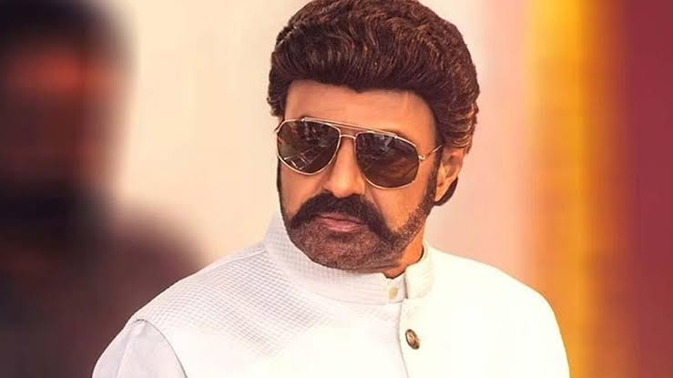

NTR

Nandamuri Taraka Rama Rao Jr. (born 20 May 1983), also known as Jr. N.T.R. or Tarak, is an Indian actor who primarily works in Telugu cinema. One of the highest paid Telugu film actors,[1][2] Rama Rao has won several accolades, including two Filmfare Awards, two state Nandi Awards, and four CineMAA Awards. Since 2012, he has been featured in Forbes India's Celebrity 100 list.[3]
Grandson of Indian matinee idol, N. T. Rama Rao Sr. who was also the former Chief Minister of the Indian state of Andhra Pradesh,[4] Rama Rao appeared as a child actor in works such as Brahmarshi Viswamitra (1991), and Ramayanam (1997), the latter winning the National Film Award for Best Children's Film for that year. He made his debut as a lead actor with Ninnu Choodalani (2001). He rose to prominence with the coming-of-age film Student No. 1 (2001) and the action drama Aadi (2002).
Rama Rao established himself as a leading actor in Telugu cinema with works such as Simhadri (2003), Yamadonga (2007), Adhurs (2010), Brindavanam (2010), Baadshah (2013), Temper (2015), Nannaku Prematho (2016), Janatha Garage (2016), Jai Lava Kusa (2017), Aravinda Sametha Veera Raghava (2018), and RRR (2022), the latter being his highest-grossing release. He won two Filmfare Awards for Best Actor – Telugu for his performances in Yamadonga and Nannaku Prematho.
balayya babu

Nandamuri Balakrishna (born 10 June 1960), widely known as Balakrishna, and Balayya is an Indian actor, producer and politician known for his works in Telugu cinema.[2][3] Balakrishna is an elected member of the Andhra Pradesh Legislative Assembly from Hindupuram constituency since 2014.[4] The sixth son of veteran actor and former Chief Minister of Andhra Pradesh N. T. Rama Rao, Balakrishna made his debut as a child artist at the age of 14 with the film Tatamma Kala (1974).[5][6] Balakrishna is a recipient of three state Nandi Awards and one South Indian International Movie Award.[7] In 2012, Balakrishna was the chief guest at the 43rd IFFI.[8] Currently He serves as the Chairman of Basavatarakam Indo-American Cancer Hospital and Research Center in Hyderabad.[9]
Known for his dancing skills, Balakrishna starred in more than hundred feature films in a variety of roles.[10] He achieved commercial success, with works such as Sahasame Jeevitham (1984), Janani Janmabhoomi (1984), Mangammagari Manavadu (1984), Apoorva Sahodarulu (1986), Muvva Gopaludu (1987), Muddula Mavayya (1989), Nari Nari Naduma Murari (1990), Lorry Driver (1990), Aditya 369 (1991), Rowdy Inspector (1992), Bangaru Bullodu (1993), Bhairava Dweepam (1994), Peddannayya (1997), Samarasimha Reddy (1999), Narasimha Naidu (2001), Lakshmi Narasimha (2004), Simha (2010), Legend (2014), Akhanda (2021), Veera Simha Reddy (2023), and Bhagavanth Kesari (2023).
prabhas

Uppalapati Venkata Suryanarayana Prabhas Raju ([pɾabʱaːs] born 23 October 1979) is an Indian actor who predominantly works in Telugu cinema. One of the highest-paid actors in Indian cinema,[4] Prabhas has featured in Forbes India's Celebrity 100 list since 2015[5][6][7] and has received seven Filmfare Awards nominations, a Nandi Award, and a SIIMA Award.
Prabhas made his acting debut with the 2002 Telugu drama Eeswar, and later attained his breakthrough with the action romance Varsham (2004). His notable works include Chatrapathi (2005), Bujjigadu (2008), Billa (2009), Darling (2010), Mr. Perfect (2011), and Mirchi (2013), winning the Nandi Award for Best Actor for his performance in the lattermost.[8][9]